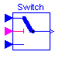
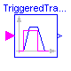
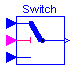
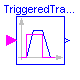


 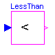
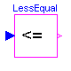
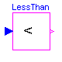
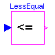

 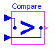
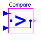

This package contains components to operate on Boolean signals.
This package is not part of the Modelica standard library, because it is planned to vectorize all components and to support alternatively the American symbols for the logical operators.
Release Notes:
Copyright © 2000-2002, DLR.
The ModelicaAdditions.Blocks.Logical package is free software; it can be redistributed and/or modified under the terms of the Modelica license, see the license conditions and the accompanying disclaimer in the documentation of package Modelica in file "Modelica/package.mo".
ModelicaAdditions.Blocks.Logical.NOT

Logical NOT Block The output y is true, if the input u is false. The output y is false, if the input u is true. +---------------------------+ | input output | | -> | | u y | +---------------------------+ | true false | | false true | +----------------------------
block NOT "Logical NOT Block" extends Modelica.Blocks.Interfaces.BooleanSISO; equation y = not u; end NOT;
ModelicaAdditions.Blocks.Logical.OR

Logical OR Block The output y is false, if the first input u1 and the second input u2 are both false. In all other cases the output y is true. +---------------------------------+ | input output | | -> | | u1 u2 y | +---------------------------------+ | true true true | | true false true | | false true true | | false false false | +---------------------------------+
block OR "Logical OR Block" extends Interfaces.BooleanSI2SO; equation y = u1 or u2; end OR;
ModelicaAdditions.Blocks.Logical.AND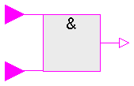
Logical AND Block The output y is true, if the first input u1 and the second input u2 are both true. In all other cases the output y is false. +---------------------------------+ | input output | | -> | | u1 u2 y | +---------------------------------+ | true true true | | true false false | | false true false | | false false false | +---------------------------------+
block AND "Logical AND Block" extends Interfaces.BooleanSI2SO; equation y = u1 and u2; end AND;
ModelicaAdditions.Blocks.Logical.XOR

Logical Exclusive OR Block The output y is false, if the first input u1 and the second input u2 are both false or both true. In all other cases the output y is true. +---------------------------------+ | input output | | -> | | u1 u2 y | +---------------------------------+ | true true false | | true false true | | false true true | | false false false | +---------------------------------+
block XOR "Logical Exclusive OR Block" extends Interfaces.BooleanSI2SO; equation y = if (u1 and u2) or (not u1 and not u2) then false else true; end XOR;
ModelicaAdditions.Blocks.Logical.NOR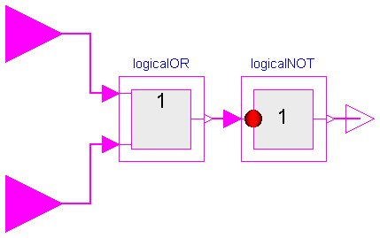
Logical NOR Block The output y is true, if the first input u1 and the second input u2 are both false. In all other cases the output y is true. +---------------------------------+ | input output | | -> | | u1 u2 y | +---------------------------------+ | true true false | | true false false | | false true false | | false false true | +---------------------------------+
block NOR "Logical NOR Block" extends Interfaces.BooleanSI2SO; NOT logicalNOT; OR logicalOR; equation connect(logicalOR.outPort, logicalNOT.inPort); connect(logicalNOT.outPort, outPort); connect(inPort1, logicalOR.inPort1); connect(inPort2, logicalOR.inPort2); end NOR;
ModelicaAdditions.Blocks.Logical.NAND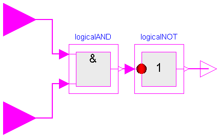
Logical NAND Block The output y is false, if the first input u1 and the second input u2 are both true. In all other cases the output y is true. +---------------------------------+ | input output | | -> | | u1 u2 y | +---------------------------------+ | true true false | | true false true | | false true true | | false false true | +---------------------------------+
block NAND "Logical NAND Block" extends Interfaces.BooleanSI2SO; NOT logicalNOT; AND logicalAND; equation connect(logicalNOT.outPort, outPort); connect(inPort1, logicalAND.inPort1); connect(inPort2, logicalAND.inPort2); connect(logicalAND.outPort, logicalNOT.inPort); end NAND;
ModelicaAdditions.Blocks.Logical.LogicalSwitch

The LogicalSwitch switches, depending on the Boolean inPort2 connector (the middle connector), between the two possible input signals inPort1 (upper connector) and inPort3 (lower connector).
If inPort2 is true, outPort is set equal to inPort1, else it is set equal to inPort2.
block LogicalSwitch "Logical Switch"
extends Modelica.Blocks.Interfaces.BooleanBlockIcon;
Modelica.Blocks.Interfaces.BooleanInPort inPort1(final n=1, signal(final
start={true})) "Connector of Boolean input signal 1";
Modelica.Blocks.Interfaces.BooleanInPort inPort2(final n=1, signal(final
start={true})) "Connector of Boolean input signal 2";
Modelica.Blocks.Interfaces.BooleanInPort inPort3(final n=1, signal(final
start={true})) "Connector of Boolean input signal 3";
Modelica.Blocks.Interfaces.BooleanOutPort outPort(final n=1, signal(final
start={true})) "Connector of Boolean output signal";
protected
Boolean u1(start=true) = inPort1.signal[1] "Input signal 1";
Boolean u2(start=true) = inPort2.signal[1] "Input signal 2";
Boolean u3(start=true) = inPort3.signal[1] "Input signal 3";
Boolean y(start=true) = outPort.signal[1] "Output signal";
equation
y = if u2 then u1 else u3;
end LogicalSwitch;
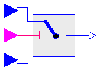
The Logical.Switch switches, depending on the logical connector inPort2 (the middle connector) between the two possible input signals inPort1 (upper connector) and inPort3 (lower connector).
If inPort2 is true, the outPort is set equal to inPort1, else it is set equal to inPort3.
| Name | Default | Description |
|---|---|---|
| n | 1 | size of input and output Real signal vectors |
block Switch "Switch between two Real signal vectors"
extends Modelica.Blocks.Interfaces.BlockIcon;
parameter Integer n=1 "size of input and output Real signal vectors";
Modelica.Blocks.Interfaces.InPort inPort1(final n=n)
"Connector of Real input signal 1";
Modelica.Blocks.Interfaces.BooleanInPort inPort2(final n=1, signal(final
start={true})) "Connector of Boolean input signal 2";
Modelica.Blocks.Interfaces.InPort inPort3(final n=n)
"Connector of Real input signal 3";
Modelica.Blocks.Interfaces.OutPort outPort(final n=n)
"Connector of Real output signal";
protected
Real u1[n]=inPort1.signal "Input signal 1";
Boolean u2(start=true) = inPort2.signal[1] "Input signal 2";
Real u3[n]=inPort3.signal "Input signal 3";
Real y[n]=outPort.signal "Output signal";
equation
y = if u2 then u1 else u3;
end Switch;

The block TriggeredTrapezoid has a boolean input and a real output, both of size n, and requires the parameter vectors amplitude, rising, falling and offset, all of size n also. The output represents a trapezoidal signal dependent on the input.
The behaviour is as follows: Assume the initial input to be false. In this case, the output will be offset. After a rising edge (i.e. the input changes from false to true), the output is rising during rising to the sum of offset and amplitude. In contrast, after a falling edge (i.e. the input changes from true to false), the output is falling during falling to a value of offset.
Note, that the case of edges before expiration of rising or falling is handled properly.
| Name | Default | Description |
|---|---|---|
| amplitude[:] | {1} | Amplitudes of trapezoids |
| rising[n] | zeros(n) | Rising durations of trapezoids [s] |
| falling[n] | rising | Falling durations of trapezoids [s] |
| offset[n] | zeros(n) | Offsets of output signals |
block TriggeredTrapezoid "Triggered trapezoid generator"
parameter Real amplitude[:]={1} "Amplitudes of trapezoids";
parameter SI.Time rising[n](final min=0) = zeros(n) "Rising durations of trapezoids"
;
parameter SI.Time falling[n](final min=0) = rising "Falling durations of trapezoids"
;
parameter Real offset[n]=zeros(n) "Offsets of output signals";
/* A start value of y is set, because pre(y) is present
to avoid a warning message from the compiler. However,
this setting does not have an effect, because y is initialized
correctly, before pre(y) is used
*/
extends Interfaces.BooleanMIRealMOs(final n=size(amplitude, 1), y(start=zeros(n),
fixed=fill(true, n)));
protected
discrete Real endValue[n] "Value of y at time of recent edge";
discrete Real rate[n] "Current rising/falling rate";
discrete SI.Time T[n] "Predicted time of output reaching endValue";
equation
for i in 1:n loop
y[i] = if time < T[i] then endValue[i] - (T[i] - time)*rate[i] else
endValue[i];
when {initial(),u[i],not u[i]} then
endValue[i] = if u[i] then offset[i] + amplitude[i] else offset[i];
rate[i] = if u[i] and (rising[i] > 0) then amplitude[i]/rising[i] else
if not u[i] and (falling[i] > 0) then -amplitude[i]/falling[i] else 0;
T[i] = if u[i] and not (rising[i] > 0) or not u[i] and not (falling[i] >
0) or not abs(amplitude[i]) > 0 or initial() then time else time + (
endValue[i] - pre(y[i]))/rate[i];
end when;
end for;
end TriggeredTrapezoid;
ModelicaAdditions.Blocks.Logical.Boolean2Real

The Boolean2Real block transforms Boolean to Real signals.
If the Boolean input is true, the Real output is the value of parameter realTrue, otherwise it is realFalse.
| Name | Default | Description |
|---|---|---|
| n | 1 | size of input and output signal vectors |
| realTrue | 1.0 | Output signal for true Boolean input |
| realFalse | 0.0 | Output signal for false Boolean input |
block Boolean2Real "Convert Boolean to Real signals"
extends Modelica.Blocks.Interfaces.BlockIcon;
parameter Integer n=1 "size of input and output signal vectors";
parameter Real realTrue=1.0 "Output signal for true Boolean input";
parameter Real realFalse=0.0 "Output signal for false Boolean input";
Modelica.Blocks.Interfaces.BooleanInPort inPort(final n=n)
"Connector of Boolean input signals";
Modelica.Blocks.Interfaces.OutPort outPort(final n=n)
"Connector of Real output signals";
protected
Boolean u[n](start=fill(true, n)) = inPort.signal "Input signals";
Real y[n]=outPort.signal "Output signals";
equation
for i in 1:n loop
y[i] = if u[i] then realTrue else realFalse;
end for;
end Boolean2Real;
ModelicaAdditions.Blocks.Logical.GreaterThan
| Name | Default | Description |
|---|---|---|
| threshold | 0 | Comparison with respect to threshold |
block GreaterThan "Outputs true, if input is greater than threshold" extends Interfaces.Comparison; equation y = u > threshold; end GreaterThan;
ModelicaAdditions.Blocks.Logical.GreaterEqual
| Name | Default | Description |
|---|---|---|
| threshold | 0 | Comparison with respect to threshold |
block GreaterEqual "Outputs true, if input is greater than or equal to threshold" extends Interfaces.Comparison; equation y = u >= threshold; end GreaterEqual;
| Name | Default | Description |
|---|---|---|
| threshold | 0 | Comparison with respect to threshold |
block LessThan "Outputs true, if input is less than threshold" extends Interfaces.Comparison; equation y = u < threshold; end LessThan;

| Name | Default | Description |
|---|---|---|
| threshold | 0 | Comparison with respect to threshold |
block LessEqual "Outputs true, if input is less than or equal to threshold" extends Interfaces.Comparison; equation y = u <= threshold; end LessEqual;
ModelicaAdditions.Blocks.Logical.Hysteresis

This block transforms a Real input signal into a Boolean output signal:
The fixed start value of the output is false. If needed, it can be changed via a modification, e.g.,
Hysteresis hyst(y(start=true));
| Name | Default | Description |
|---|---|---|
| uLow[:] | {0} | if y=true and u<=uLow, switch to y=false |
| uHigh[n] | {1} | if y=false and u>=uHigh, switch to y=true |
block Hysteresis "Transform Real to Boolean with Hysteresis"
extends Interfaces.RealMIBooleanMOs(final n=size(uLow, 1), y(each start=false,
each fixed=true));
parameter Real[:] uLow={0} "if y=true and u<=uLow, switch to y=false";
parameter Real[n] uHigh={1} "if y=false and u>=uHigh, switch to y=true";
equation
for i in 1:n loop
y[i] = u[i] > uHigh[i] or pre(y[i]) and u[i] >= uLow[i];
end for;
end Hysteresis;
ModelicaAdditions.Blocks.Logical.OnOffController

The block OnOffController sets the output signal to true when the input signal falls below the reference signal minus half of the bandwidth and sets the output signal to false when the input signal exceeds the reference signal plus half of the bandwidth.
The reference signal is represented by inPort1 and the input signal by inPort2.
| Name | Default | Description |
|---|---|---|
| bandwidth | 0.1 | Bandwidth around reference signal |
block OnOffController "On-off controller" extends Modelica.Blocks.Interfaces.MI2BooleanMOs(final n=1); parameter Real bandwidth=0.1 "Bandwidth around reference signal"; protected Real u=inPort2.signal[1] "Input signal"; Real uRef=inPort1.signal[1] "Reference input signal"; Boolean y=outPort.signal[1] "Output signal"; equation y = pre(y) and (u < uRef + bandwidth/2) or (u < uRef - bandwidth/2); end OnOffController;

Compares u1 element-wise to u2 and sets output y[i]=outPort.signal[i] to true, if u1[i]=inPort1.signal[i] is greater than u2[i]=inPort2.signal[i]:
y[i] = u1[i] > u2[i] ;
| Name | Default | Description |
|---|---|---|
| n | 1 | Dimension of input and output vectors. |
block Compare
"True, if signal of inPort1 is larger than signal of inPort2"
extends Modelica.Blocks.Interfaces.MI2BooleanMOs;
equation
for i in 1:n loop
outPort.signal[i] = inPort1.signal[i] > inPort2.signal[i];
end for;
end Compare;
ModelicaAdditions.Blocks.Logical.ZeroCrossing

The output signal (= outPort.signal[1]) is true at the time instant when the input signal (= inPort.signal[1]) becomes zero, provided the enable input (= enable.signal[1]) is true. At all other time instants, the output signal is false. If the input signal is zero at a time instant when the enable input changes its value, then the output is false.
Note, that in the plot window of a Modelica simulator, the output of this block is usually identically to false, because the output may only be true at an event instant, but not during continuous integration. In order to check that this component is actually working as expected, one should connect its output to, e.g., component ModelicaAdditions.Blocks.Discrete.TriggeredSampler.
| Name | Default | Description |
|---|---|---|
| n | 1 | Number of inputs (= number of outputs) |
block ZeroCrossing "Trigger zero crossing of input signal"
extends Interfaces.RealMIBooleanMOs(outPort(signal(each fixed=true)));
Modelica.Blocks.Interfaces.BooleanInPort enable(final n=1)
"Zero input crossing is triggered if the enable input signal is true";
protected
Boolean enabled(fixed=true) = enable.signal[1];
Boolean disabled(fixed=true) = not enable.signal[1];
Boolean u_pos[n](each fixed=true);
equation
for i in 1:n loop
u_pos[i] = enabled and u[i] >= 0;
y[i] = change(u_pos[i]) and not edge(enabled) and not edge(disabled);
end for;
end ZeroCrossing;